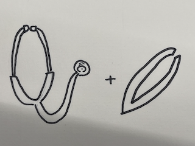

「ハートをつかむ聴診器型ピンセット」
作品の説明
この作品は聴診器とピンセットを融合させたものです。ピンセットの部分をハートっぽくしているのがポイントです。
なぜこの作品を作ろうという想いに至ったか
アイデアを発散する時間にピンセットと関連のないものを融合させたら面白いのではないかと考えたことが最初でした。 積み木や滑り台など様々なアイデアが出る中、私は「聴診器」というアイデアが浮かびました。 そして、アイデアスケッチを描いてみると物を掴む部分を聴診器とかけてハートにしてみたら面白いのではないかと考え、この作品を作ろうという思いに至りました。
スケッチ
ピンセット出力中
完成したピンセット(着色前)
着色
完成したピンセット(着色後)


レジンで着色しました

設計ファイル : ここからダウンロード